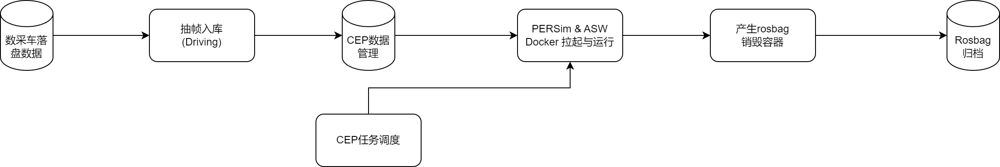

05 KPI and HPA generalization verification platform based on Persim
background
I hope to use PIPELINE (currently referred to as Prediction Pipeline) based on Persim as the base, and complete two tasks of the PER team's single -module KPI and HPA generalized verification.From the perspective of the use of demand and the tool chain renovation, you can first promote generalization verification landing, and then complete the KPI link.
KPI verification
The KPI verification is mainly to evaluate the accuracy of the Perception output, and the verification set data that is not used for model learning is used to place the current software as ROSBAG through PIPELINE.Yes, and generate indicators such as recognition rates, errors.From the architecture of the project, the KPI result of large data volume (used to reflect the performance of the algorithm itself) will be generated by a lower cost of PC links, and the small batch results running on the board (used to reflect the limited performance of the board on the boardWhether to operate normally), forming a complete KPI report.
The category of KPI verification will include basic functions such as Vipeer and LIPER, which will also cover the fusion functions such as SF and DF. In the end, it will also cover the composite functions such as HPA building maps and regulation.
HPA generalization verification
HPA is currently in a high -speed iteration period, but currently testing the parking lot only covers very few parking lots, and many upstream upstream can only send new software to run data after each iteration.Link reuse existing data is tested.Compared to KPI, the links of generalized verification can be ends only when they are generated by ROSBAG.
HPA full -name Homezone Parking Assistant, the general function is when the first time in the parking lot, click Training to open the parking space from the parking lot entrance to the parking space. In the process, a parking site map will be built according to the various feature information you see.After entering the parking lot after the follow -up, you can click on the replay and the vehicle is positioned to the current map. Then, according to the map and learning trajectory, automatically track the parking spaces when you are automatically tracked.The estimated launch time on the project is 3.20
It can be considered that the generalization verification of most PER modules can be directly verified on the current Pipeline.The particularity of HPA is
Relying on FCT's map or back -to -place signal
Steps to save maps or load training maps
Data source must be recorded for HPA
Therefore, it is necessary to implement the function on the current PIPELINE, involving a large amount of transformation of Persim, architecture, and CEP.
Current link framework
The current link only supports Driving data, and can produce ROSBAG

Current Gap Analysis
Software operation
Software Operation refers to the running part of Persim and Asw software packages.
PERSim
If the full link of the HPA is completed, the basic perception of the current perception of the recovery of the recovery is mainly to develop some upstream signals.
It is mainly FCT signals. For example, when the map starts, when the chart is completed, the method is to use the template FCT signal and configure the time point of the signal switch -originated from the configuration.These signals need to develop a process separately on the Persim link, and release the signal according to the configuration, similar to the previously set back calibration operation.
Software package status
Currently, basic modules such as Viper and DF can be basically started on X86. The current state of the current state is unknown.
CEP status
Support HPA test
After the software supports HPA operation, the following changes will be involved
Data drawing frame supports Parking data, including processing Parking data and separate management of Driving data
The data supports the configuration of the HPA signal switching configuration. The specific form is to switch the value of the specific signal at a certain time point and pass it to Persim.The current draft plan is that the default assumes that the data starts at the beginning of the data and starts the map/regattting, and the last second ends.The configuration is bound by the scene library, and the development can be adjusted according to the data situation and results.
Map Management: When running the Training task, the map will be generated and identified the ID, which has nothing to do with the map ID generated by the algorithm itself.The map is managed according to the parking lot label of the data source. When replay, you can specify the corresponding map ID, and the range is the map of the same parking lot.
In addition to ROSBAG, operating products are added to the map files
Support KPI verification
Assuming that under the premise that each module is unobstructed, KPI can be considered to be compared with ROSBAG and the real value data on the basis of generating ROSBAG. You can refer to the following charts below
The main gap is
CEP scene library and label management management
Tag type management
KPI run container scheduling
Results show